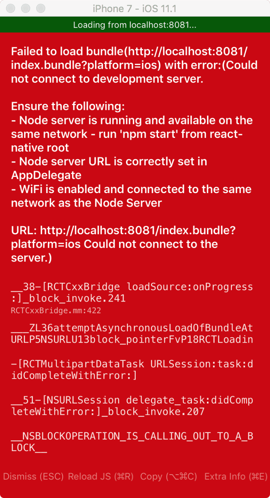
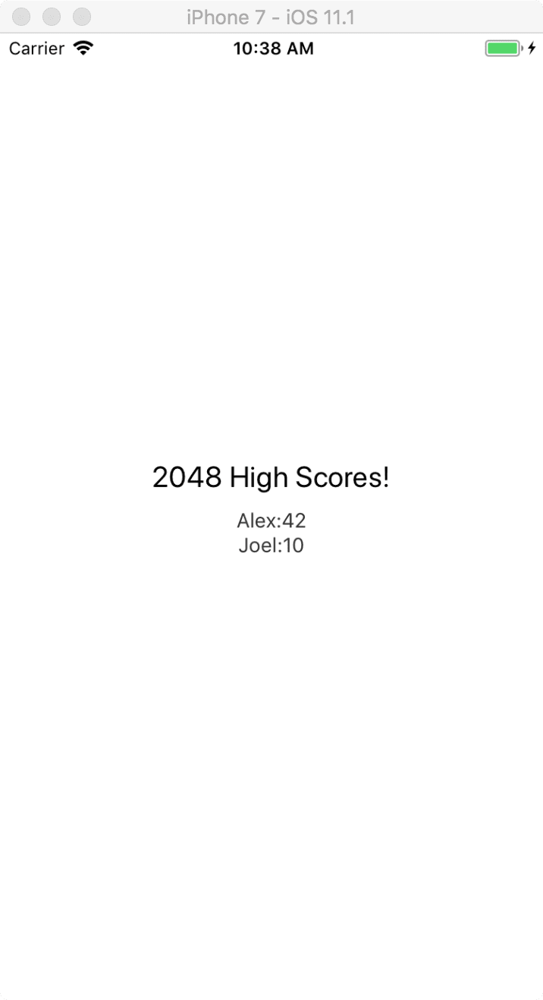

RN 加入到现有的iOS项目中
建议用 react-native init 创建项目后，再把旧的iOS项目将文件迁移到该iOS项目去。
1.首先创建一个iOS项目，名为 test。
这里有点注意的是，要修改info.plist文件里面关于网络的设定。
<key>NSAppTransportSecurity</key>
<dict>
<key>NSExceptionDomains</key>
<dict>
<key>localhost</key>
<dict>
<key>NSTemporaryExceptionAllowsInsecureHTTPLoads</key>
<true/>
</dict>
</dict>
</dict>
或者这个，我更倾向于后者：
<key>NSAppTransportSecurity</key>
<dict>
<key>NSAllowsArbitraryLoads</key>
<true/>
</dict>
2.创建用来寄放 React Native 项目的文件夹，取名为：testiOSRN。
3.在 testiOSRN 文件夹下，创建一个名为：package.json 的文件。
输入以下内容：
{
"name": "MyReactNativeApp",
"version": "0.0.1",
"private": true,
"scripts": {
"start": "node node_modules/react-native/local-cli/cli.js start"
},
"dependencies": {
"react": "^16.3.1",
"react-native": "0.54.3"
}
}
在 testiOSRN 目录下，执行 npm install 命令。 结束后，testiOSRN 目录下会有：node_modules、package.json、package-lock.json。
4.在 testiOSRN 目录下，创建为名 ios 的文件夹，用来存放iOS项目。
将iOS项目，移动到这里。 ios 文件夹下放：test 文件夹、test.xcodeproj 之类文件，无上一级文件夹。
5.CocoaPods 操作
1.假如没有 CocoaPods 的话，可以进行安装。
brew install cocoapods
安装过的话，会更新一下相关更新。
2.在 ios 目录下（具体路径为：testiOSRN/ios ）。
使用命令
pod init
结束后你会看到一个 Podfile 文件的创建。 打开后会看到以下内容：
# Uncomment the next line to define a global platform for your project
#platform :ios, '9.0'
target 'test' do
# Uncomment the next line if you're using Swift or would like to use dynamic frameworks
# use_frameworks!
# Pods for test
end
然后我修改了一下，根据相关指示。。。
# Uncomment the next line to define a global platform for your project
platform :ios, '8.0'
target 'test' do
# Uncomment the next line if you're using Swift or would like to use dynamic frameworks
# use_frameworks!
# Pods for test
# 'node_modules'目录一般位于根目录中
# 但是如果你的结构不同，那你就要根据实际路径修改下面的`:path`
pod 'React', :path => '../node_modules/react-native', :subspecs => [
'Core',
'CxxBridge', # 如果RN版本 >= 0.45则加入此行
'DevSupport', # 如果RN版本 >= 0.43，则需要加入此行才能开启开发者菜单
'RCTText',
'RCTNetwork',
'RCTWebSocket', # 这个模块是用于调试功能的
# 在这里继续添加你所需要的RN模块
]
# 如果你的RN版本 >= 0.42.0，则加入下面这行
pod "yoga", :path => "../node_modules/react-native/ReactCommon/yoga"
# 如果RN版本 >= 0.45则加入下面三个第三方编译依赖
pod 'DoubleConversion', :podspec => '../../node_modules/react-native/third-party-podspecs/DoubleConversion.podspec'
pod 'glog', :podspec => '../node_modules/react-native/third-party-podspecs/glog.podspec'
pod 'Folly', :podspec => '../node_modules/react-native/third-party-podspecs/Folly.podspec'
end
然后，执行命令安装依赖：（还在 ios 目录下，哦~）
pod install
这个下载过程异常缓慢。。。。。。。
6. 编写 React Native 内容
1.在 testiOSRN 文件夹下，创建一个名为：index.js 的文件。
可以通过 touch 命令创建：
touch index.js
2.写入内容：
import React from 'react';
import {
AppRegistry,
StyleSheet,
Text,
View
} from 'react-native';
class RNHighScores extends React.Component {
render() {
var contents = this.props["scores"].map(
score => <Text key={score.name}>{score.name}:{score.value}{"\n"}</Text>
);
return (
<View style={styles.container}>
<Text style={styles.highScoresTitle}>
2048 High Scores!
</Text>
<Text style={styles.scores}>
{contents}
</Text>
</View>
);
}
}
const styles = StyleSheet.create({
container: {
flex: 1,
justifyContent: 'center',
alignItems: 'center',
backgroundColor: '#FFFFFF',
},
highScoresTitle: {
fontSize: 20,
textAlign: 'center',
margin: 10,
},
scores: {
textAlign: 'center',
color: '#333333',
marginBottom: 5,
},
});
// 整体js模块的名称
AppRegistry.registerComponent('MyReactNativeApp', () => RNHighScores);
接着下来就是到 iOS 项目里面进行修改了。
7.
在 ViewController.m 里面修改代码：
引入头文件：
#import <React/RCTRootView.h>
- (void)viewDidLoad {
[super viewDidLoad];
// Do any additional setup after loading the view, typically from a nib.
UIButton* button = [[UIButton alloc] initWithFrame:CGRectMake(0, 100, 100, 150)];
button.backgroundColor = [UIColor redColor];
[button addTarget:self action:@selector(pressedButtonToDoSomething:) forControlEvents:UIControlEventTouchUpInside];
[self.view addSubview:button];
}
- (void) pressedButtonToDoSomething:(UIButton*)sender {
}
在 pressedButtonToDoSomething: 方法里面编写以下内容：
NSLog(@"High Score Button Pressed");
NSURL *jsCodeLocation = [NSURL URLWithString:@"http://localhost:8081/index.bundle?platform=ios"];
RCTRootView *rootView =
[[RCTRootView alloc] initWithBundleURL : jsCodeLocation
moduleName : @"MyReactNativeApp"
initialProperties :
@{
@"scores" : @[
@{
@"name" : @"Alex",
@"value": @"42"
},
@{
@"name" : @"Joel",
@"value": @"10"
}
]
}
launchOptions : nil];
UIViewController *vc = [[UIViewController alloc] init];
vc.view = rootView;
[self presentViewController:vc animated:YES completion:nil];
想运行看看，却出现错误：
ld: warning: directory not found for option '-L/Users/muzico/Library/Developer/Xcode/DerivedData/test-cfkmuzfbgjtnyudefuszxwznegit/Build/Products/Debug-iphonesimulator/DoubleConversion'
ld: warning: directory not found for option '-L/Users/muzico/Library/Developer/Xcode/DerivedData/test-cfkmuzfbgjtnyudefuszxwznegit/Build/Products/Debug-iphonesimulator/Folly'
ld: warning: directory not found for option '-L/Users/muzico/Library/Developer/Xcode/DerivedData/test-cfkmuzfbgjtnyudefuszxwznegit/Build/Products/Debug-iphonesimulator/React'
ld: warning: directory not found for option '-L/Users/muzico/Library/Developer/Xcode/DerivedData/test-cfkmuzfbgjtnyudefuszxwznegit/Build/Products/Debug-iphonesimulator/glog'
ld: warning: directory not found for option '-L/Users/muzico/Library/Developer/Xcode/DerivedData/test-cfkmuzfbgjtnyudefuszxwznegit/Build/Products/Debug-iphonesimulator/yoga'
ld: library not found for -lDoubleConversion
clang: error: linker command failed with exit code 1 (use -v to see invocation)
。。。。。。。。把项目关了。。。。。。。。。
发现ios 目录下，多了一个叫 test.xcworkspace 的文件，点击打开，跑程序~~~~OK。
点击红色的按钮。。。

到 testiOSRN 文件夹下，执行命令：
npm start
然后回到 test.xcworkspace 工程点击运行，点击红色按钮，顺利的跑成功了。

不打开 test.xcworkspace 工程点击运行，还可以用命令执行：
react-native run-ios
但记住，这个也是需要执行 npm start 命令的。
8.另一个方式实现：（与 7. 不同）
创建一个 UIViewController，名为：TestViewController。
修改 TestViewController.m 的内容：
#import "TestViewController.h"
#import <React/RCTRootView.h>
@interface TestViewController ()
@end
@implementation TestViewController
- (void) loadView {
NSURL *jsCodeLocation = [NSURL URLWithString:@"http://localhost:8081/index.bundle?platform=ios"];
NSDictionary* props = @{
@"scores" : @[
@{
@"name" : @"Alex",
@"value": @"42"
},
@{
@"name" : @"Joel",
@"value": @"10"
}
]
};
RCTRootView * rootView = [[RCTRootView alloc] initWithBundleURL:jsCodeLocation
moduleName:@"MyReactNativeApp"
initialProperties:props
launchOptions:nil];
self.view = rootView;
}
- (void)viewDidLoad {
[super viewDidLoad];
// Do any additional setup after loading the view.
}
@end
然后在ViewController 里面点击按钮加载：
- (void) pressedButtonToDoSomething:(UIButton*)sender {
TestViewController* vc = [TestViewController new];
[self presentViewController:vc animated:YES completion:^{
}];
}